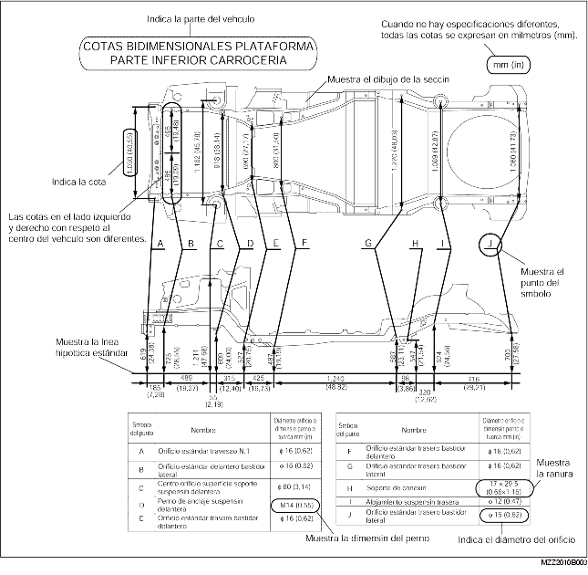
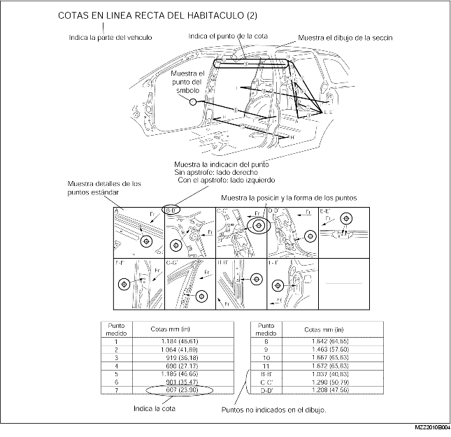

• Esta sección contiene informaciones que se refieren a los tipos de soldadura, al número de los puntos de soldadura y a los puntos de corte y empalme que sirven para una correcta remoción e instalación de los paneles de la carrocería.
• Los tipos de soldadura y los puntos de soldadura se indican mediante símbolos.
• Algunas secciones tienen detalles que se refieren a las operaciones que se deben efectuar. Leer estas notas por completo antes de efectuar cualquier procedimiento.
Ejemplo
• Los 6 símbolos siguientes indican los tipos de soldadura utilizados para la sustitución de paneles de la carrocería.

• Las cotas bidimensionales son las cotas que resultan de la proyección sobre el plano de unos puntos de referencia determinados.
• Si no está especificado diversamente, los puntos estándar son simétricos con respeto al centro del vehículo.
• La línea hipotética varia según el tipo de vehículo.
Ejemplo

• Las cotas en línea recta son las cotas reales entre dos puntos estándar.
• Si no está especificado diversamente, los puntos estándar son simétricos con respeto al centro del vehículo.
Ejemplo

• Los 8 símbolos siguientes se utilizan para indicar los puntos estándar.